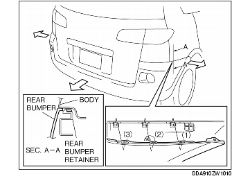

Rear bumper removal/installation
1. Remove the trunk board.
2. Remove in the order indicated in the table.

|
1
|
Screw A
|
|
2
|
Fastener
|
|
3
|
Screw B
|
|
4
|
Nut A
|
|
5
|
Nut B
|
|
6
|
Rear bumper
(See Rear Bumper Removal Note)
|
3. Install in the reverse order of removal.
Rear Bumper Removal Note
1. Pull the rear bumper ends (wheel arch) outward in numerical order to disengage from the rear bumper retainer.

- • When disengaging the rear bumper from the rear bumper retainer, the bumper could fall and be damaged. Secure the bumper so that it does not fall.
2. Remove the rear bumper from the body.
Rear Bumper Installation Note
1. Spread the rear bumper ends (wheel arches) apart.
2. Attach the rear bumper to the body.
3. Engage the rear bumper fascia and the splash shield.
4. Press the rear bumper connecting area into the body to engage with the rear bumper retainer.